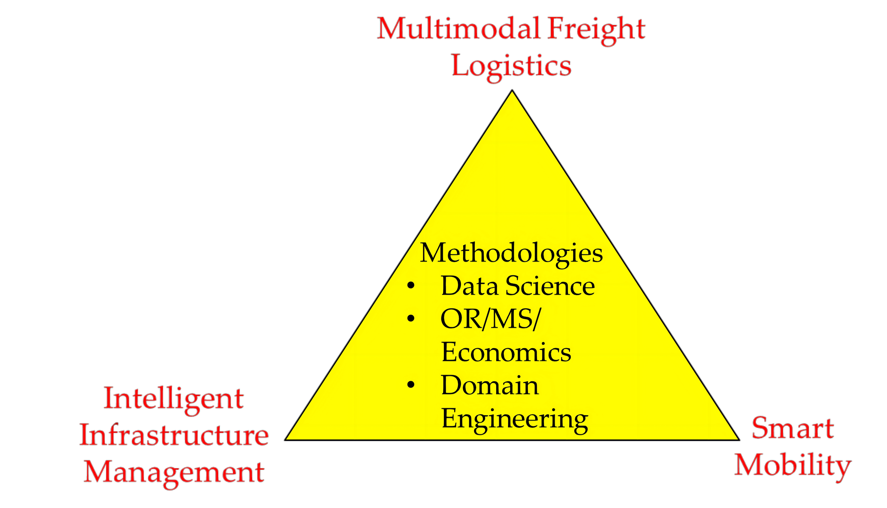

白云博士, 2013年博士毕业于美国伊利诺伊大学香槟分校, 土木与环境工程专业。2008年本科毕业于浙江大学土木工程专业及竺可桢学院工程教育辅修专业。 2013至2014年于伊利诺伊大学担任博士后研究员。2014年至2022年于美国罗格斯大学担任研究助理研究员、助理研究教授。 2022年9月加入香港科技大学(广州)智能交通学域, 担任助理教授。
Research Interests
白云博士的研究方向是多模式、复杂交通系统建模，应用先进的数据科学、运筹学、系统工程、和管理学方法来解决交通、供应链网络设计及基础设施资产管理问题。 她目前的研究重点是交通设施数字孪生和智能运维，包括基础设施（轨道，桥梁等）的大数据采集、 融合和分析、来研究其老化和病害机制、状态及剩余寿命的预测、生命周期成本分析、养护决策优化和预算投资规划、以及系统风险和韧性分析。
Research Direction
数字孪生和智慧运维:
数字地铁，视觉及振噪等多源数据融合，数据算法实现轨道问题监测;
开发机器学习算法来模拟重大基础设施(轨道、桥梁、路面等)的伤损和磨耗机制， 预测未来老化状况，优化养护维修方案;
海洋基础设施维护管理模型及优化系统开发;
基于计算机视觉技术的交通安全管理和运营优化、及交通系统韧性研究;
基于物联网技术的智能交通系统的优化管理，如共享出行，智能物流等;
Expectations For You
你是本专业的最优秀的学生之一;
你自信未来能成为交通人工智能领域的最杰出的人才之一;
你来自工程学, 运筹学, 计算机, EE, 数学，统计学等相关专业，有扎实的数理基础;
你对智能交通前沿技术充满好奇，勇于挑战未知领域;
你既能独立研究，也能和不同领域的学者和专家沟通合作;
你思维活跃大胆，敢于提出新思路，做事踏实勤奋，认真求证;
What Can I Do
与来自交通工程，人工智能，优化科学的国内外教授, 学生和多位顶尖行业专家共同研究的机会， 开发应用前沿人工智能技术解决智能交通领域的重大前沿问题。白老师与多个美国课题组及研究中心密切合作， 鼓励并推荐学生进行国际交流和合作。团队未来侧重于产学研相结合的模式及前沿工程技术的开发与转化， 为学生提供产品开发、测试及市场化等相关经历和机会。